Wasteland
A dystopian journey through the ruins of Wonderland.
Wasteland is what remains of Wonderland.
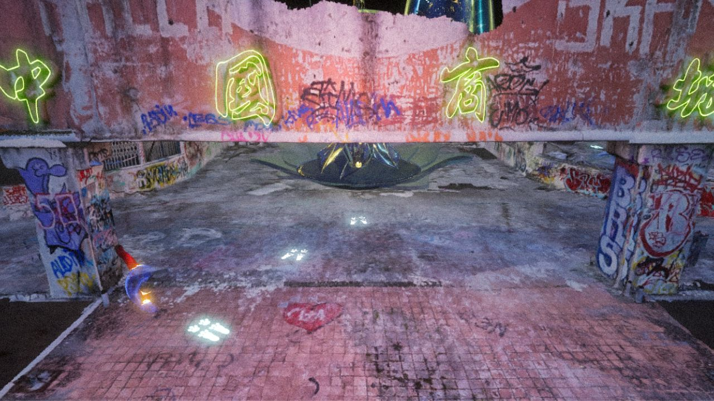
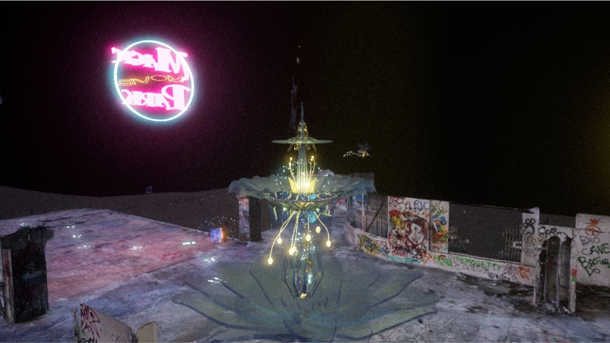
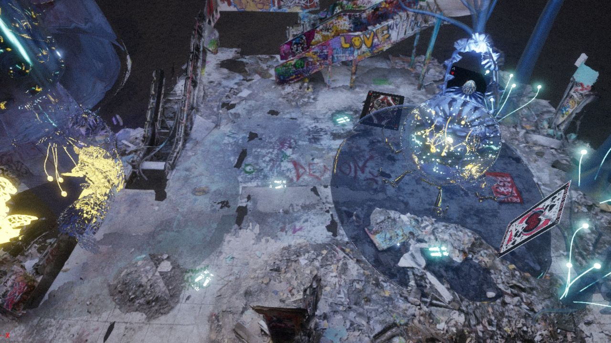
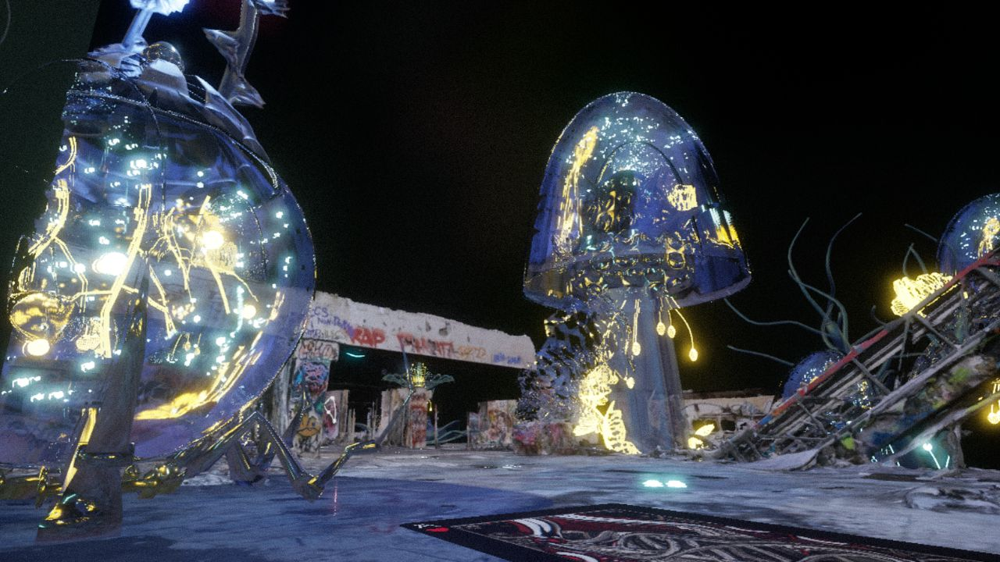
Carroll’s world ended with a dark warning — “The future will be black” — and in this project, that future has come true. A new Alice is called to return to this contaminated land, where time has stopped and only ruins remain. In this static and desolate world, Wonderland collapses into the eco-monster of Movie Park, a vast shopping centre turned into a landfill.
Wasteland is both an escape from reality and a way of returning to it with greater awareness. Its world mirrors our own: a place shaped by uncontrolled growth, waste and collapse. The explorer can either surrender to this alien space or follow the traces of the White Rabbit through the wreckage.
The project acts as a warning. In a world at risk of collapse, it is the human animal that disappears, while the rest of nature recalibrates and survives. If humanity fails to reconnect with its own mutable nature, it is destined for extinction — and for the ruins it leaves behind.
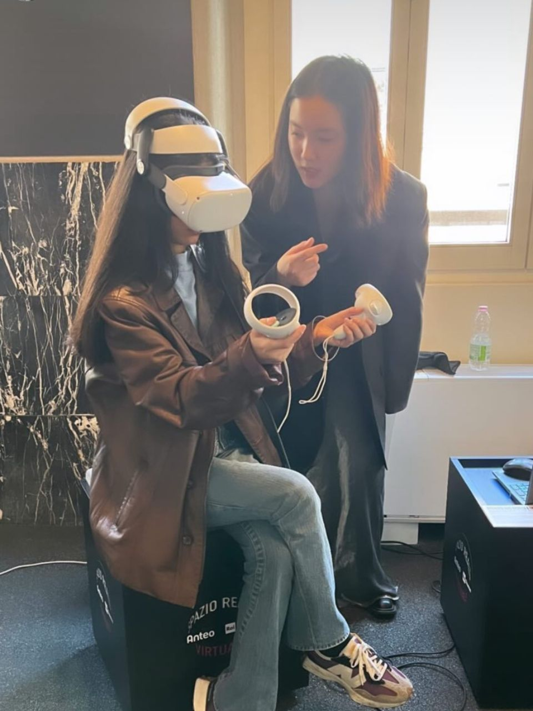
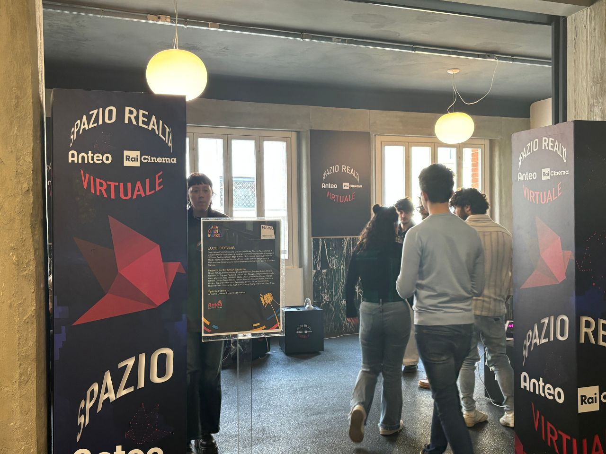
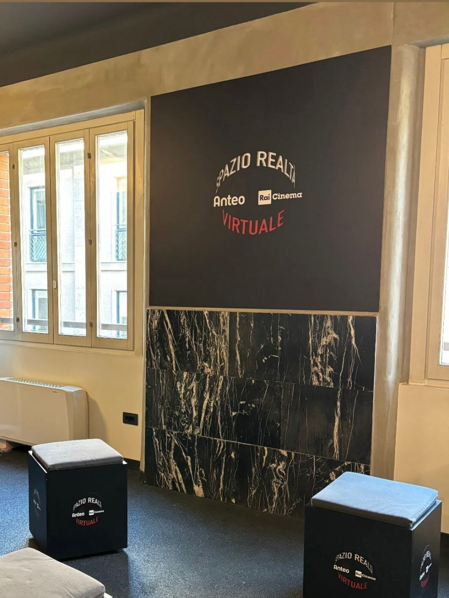
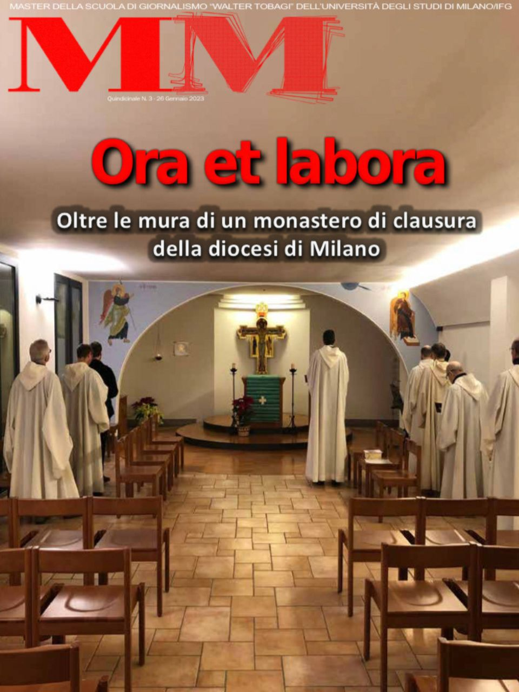
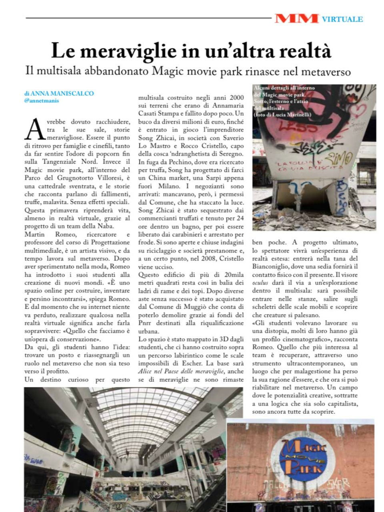
Wasteland in Augmented Reality
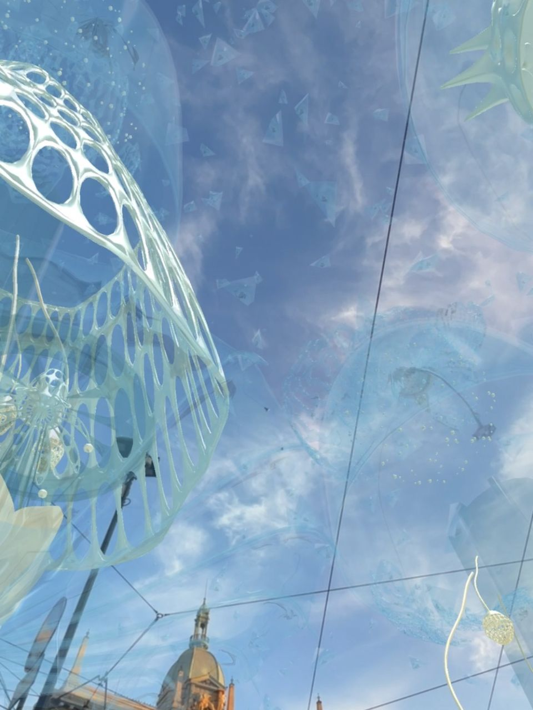
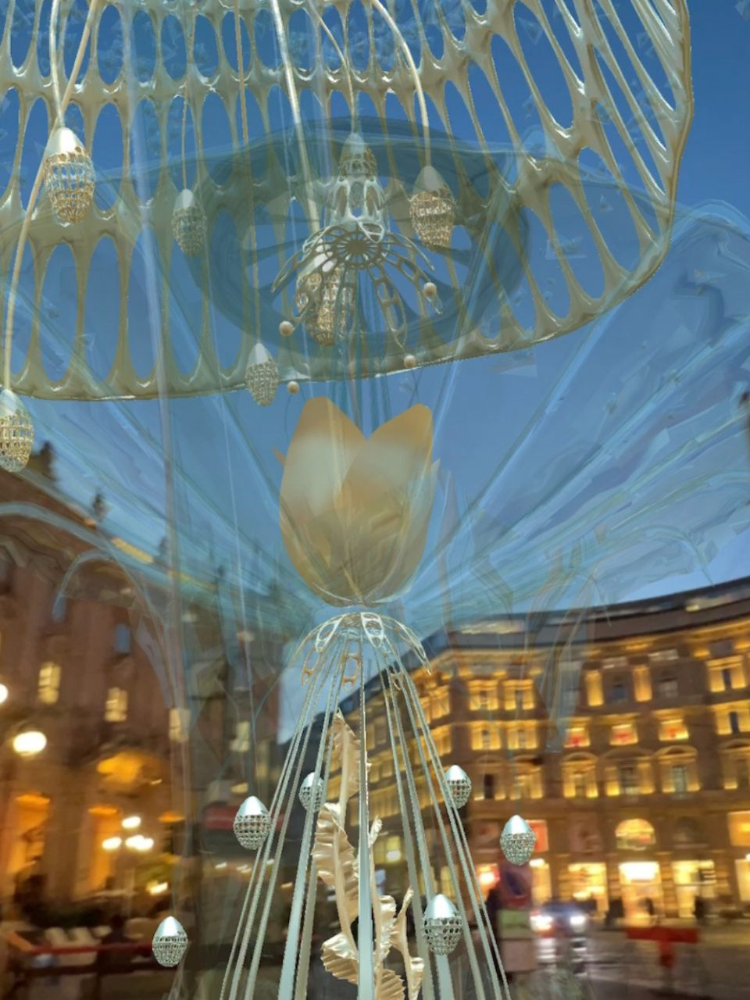
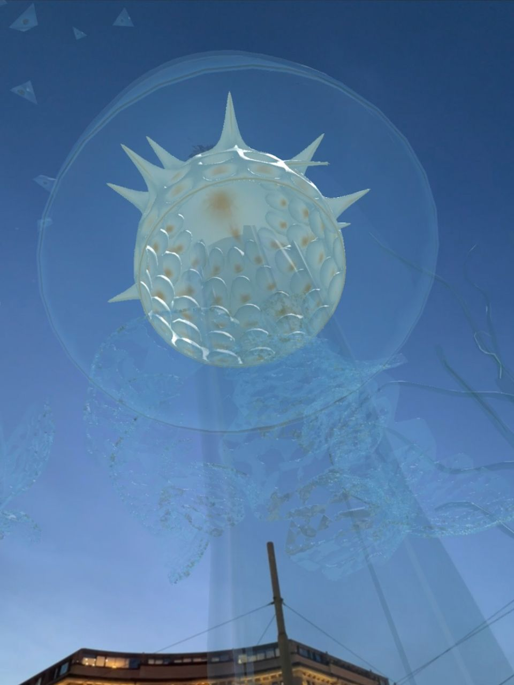